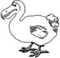

\1\2ğaç\3
Dodonun nesli neden tükendi?

a. Yemek için avlayanlar yüzünden
b. Spor amaçlı avlayanlar yüzünden
c. Doğal ortamının yokolmasından
d. Diğer türlerle girdiği rekabet nedeniyle
Dodonun (Rabhus cucullatus) iki tane sevilmeyen ayırt edici özelliği vardır: Hem ölü hem de salak olmasıyla meşhurdur.
Uçamayan bir Mauritius yerlisidir, kara yırtıcılarının olmadığı bir çevrede gelişmiş ve doğal ortamı olan ormanların yok edilmesi ve adaya domuz, fare ve köpeklerin getirilmesi nedeniyle yüz yıldan kısa bir süre içinde nesli tükenmiştir.
İşin tuhafı dodo güvercingillerdendir, ama nesli tükenmiş bir başka bilindik kuş olan göçebe güvercinin aksine dodo eti için avlanmazdı, eti hemen hemen hiç yenmezdi, Hollandalılar ona walgvogel, yani farklı kuş derlerdi.
Portekizcede de dodo ismi kabadır, “budala” anlamına gelir, ona bu ad insanlardan korkmayıp kaçmadığı için verilmiştir, bu yüzden spor amaçlı avlananlar arasında pek kıymetli değildir. 1700’de soyu tamamen tükenmiştir.
1755’te Oxford’taki Ashmolean Müzesi müdürü, sergilenen numunede saklanmaya değmeyecek kadar güve yeniği olduğunu düşünüp, bunu açık havada çöplerin yakıldığı ateşe attı. Bu, o güne kadar muhafaza edilmiş tek dodoydu. Oradan geçen bir görevli onu kurtarmaya çalıştı, ama yalnızca kafasını ve vücudunun çok küçük bir kısmını kurtarabildi.
Uzunca bir zaman, dodo hakkında bilinen her şey, bu kalıntılardan, bir avuç tasvirden, üç ya da dört yağlı boya tablodan ve birkaç tane kemikten yola çıkılarak türetilmişti. Hatta bazı dinozorlar hakkında daha çok şey biliyorduk. Aralık 2005’te, Mauritius’ta bol miktarda saklı kemik bulundu ve bu çok daha kesin bir yeniden değerlendirme imkanı tanıdı.
Neslinin tükenişinden, 1865’te Alice Harikalar Diyarında kitabının basılmasına kadar dodo neredeyse tamamen unutulmuştu. Oxford’ta matematik öğretmeni olan Charles Dodgson16 (daha çok Lewis Carroll olarak bilinir) onu Ashmolean’da görmüş olmalı.
Dodo, Alice Harikalar Diyarında’da Kafkas Yarışı bölümünde ortaya çıkar. Bu yarışın belli bir başlangıç ya da bitiş noktası yoktur ve sonunda herkes bir ödül kazanır. Kuşların her biri, Dodgson hikâyeyi ilk anlattığında mevcut olan sandal partisindeki üyelere denk düşer ve dodonun bizzat Dodgson’a dayandığı söylenir.
Sir John Tenniel’in kitaptaki çizimiyse bu kuşu hemen ünlü yaptı. “Dodo kadar ölü” sözü de bu dönemden kalmadır.